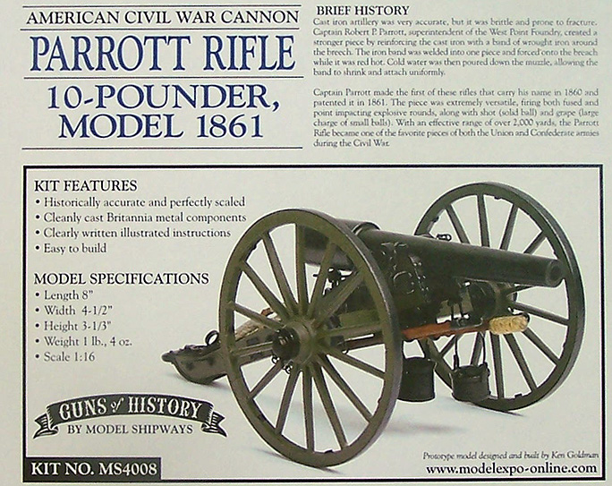
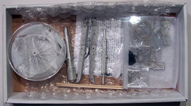
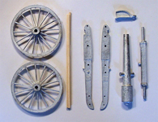
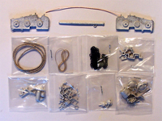

{kind=link}
{kind=link}
{kind=link}


Model Shipways 1/16 Model 1861 10 Pounder Parrott Rifle

Kit #MS4008 MSRP $99.99 $74.99 from Model Expo
Images and text Copyright © 2010 by Matt Swan
Developmental Background
The Parrott Rifle became very well known during the American Civil War. Designed by Robert Parker Parrott in 1860 and manufactured in various bore sizes ranging from a 3 inch 10 pounder to a massive 10 inch, 300 pound beast used against Confederate positions at Fort Sumter. What made the Parrott Rifle unique was the manner in which it was manufactured from cast iron then reinforced with wrought iron. As most aficionados of navel and civil war weaponry realize, cast iron was somewhat brittle and suffered from breech fractures. Parrott reinforced his breech with a band of wrought iron applied red hot then set with water while turning the barrel. The 3 inch, 10 pound version was probably the most popular field gun of the Parrott Rifles and by wars end was in use by both armies.
The Parrott Rifles were accurate up to 2000 yards and were much cheaper than other rifled artillery pieces of the day however they did suffer from safety issues. It was not uncommon to have a rifle burst then have the artillerists simply chip out the jagged pieces and continue to fire the weapon. By 1862, only one year after the rifles were introduced to the inventory, some officers were petitioning to have it removed from service. It did however remain in use well into 1869 when after several disastrous training mishaps it was finally removed from service. Today there are several hundred examples of these rifles in memorials scattered around the continental US.
The Kit
The kit arrives well packaged in a very sturdy heavy duty cardboard box. The interior of the box is lined with bubble wrap, larger gun parts are additionally buffered with foam wrap and the wheels are foam wrapped inside a hard plastic case. It is more than obvious that Model Shipways does not care to deal with shipping any damages and I would guess they have achieved that goal.
This kit is almost entirely fabricated from Britannia metal or what we aircraft modelers commonly call ‘white metal’, in fact the only parts that are not white metal are three wooden dowels to be used as handles for the rams, a piece of copper wire, a short length of chain and a piece of twine. This means the modeler will have to use entirely different glues from what would typically be used on a plastic model. Here the modeler must use either super glue (cryoanacrylic) or five minute epoxy to assemble the parts.
The kit parts all appear to be very well cast with only minimal mold separation lines and no flash. The pour stubs have all been removed with only small amounts of metal that needs to be sanded off to obtain a clean part. The main barrel, wheels and gun frame are nearly perfect other than a slight misalignment of the left and right frame members. Within little plastic bags are a variety of detail parts such as water buckets, sponge and ram heads and various fasteners. Overall this kit contains 42 Britannia castings along with 12 inch lengths of chain, fine rope and medium rope, 3 wooden dowels and 4 inches of wire. All this combines into a very nice scale reproduction of the 10 pound Parrot Rifle.



You may click on each of these small images to view larger pictures
Kit instructions consist of two photocopied pages. The first is a complete parts breakdown with part numbers should you need to order any replacement pieces. The second sheet contains a very nice exploded view of the rifle along with general construction notes and thirteen construction steps described in some detail. The instructions also offer painting suggestions which, by the, Model Shipways does offer a paint package for this kit with all the required colors. The flip side of this sheet simply contains advertisements for several other period related kits and some rather interesting ship kits.
Conclusions
This is really a very nice kit of a very interesting artillery piece. First it is extremely well packaged which is great for shipping and for storage in a modelers’ stash. The parts are all very well cast with no obvious defects, some clean-up and trimming will be needed but nothing excessive. The general fit of the primary parts is good, easily as good as any contemporary plastic injection molded kit. I would recommend this as an unusual piece for the more conventional plastic modeler and as a piece to expand the builders’ skill set. For those who are fans of this historical period you really should have one already.